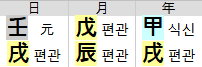

90년대생
월지편관 임수일간
사주가 어느정도는 외모를 반영하는 듯
물론 유전이 60~70%정도 되지만 사주가 아예 외모에 관여 하지 않는 건 아닌 듯 싶습니다.
그러니까 사주는 소스라고 할까요 원물은 유전이고 소스는 사주.
1. 짙은 눈썹
2. 짧은 인중
3. 칼 귀
이 세가지가 날카로운 인상을 만드는 듯 합니다.

90년대생
월지편관 임수일간
사주가 어느정도는 외모를 반영하는 듯
물론 유전이 60~70%정도 되지만 사주가 아예 외모에 관여 하지 않는 건 아닌 듯 싶습니다.
그러니까 사주는 소스라고 할까요 원물은 유전이고 소스는 사주.
1. 짙은 눈썹
2. 짧은 인중
3. 칼 귀
이 세가지가 날카로운 인상을 만드는 듯 합니다.
이재명 부모묘 언제 옮김?
이빨
다뽑는
싸패의사상
마!
재윤
했노

마!
재윤
했노
ㅇㄱㄹㅇ
머리털이
좆털같네
완악지상
완악지상
90년대생
구대남
마!
재윤
했노
그정돈
아님;;
비추
폭격
니가
왕이다
90년대생
구대남
완악지상
이딴사이비종교는
90년대생
구대남
ㄹㅇ ㅋㅋ